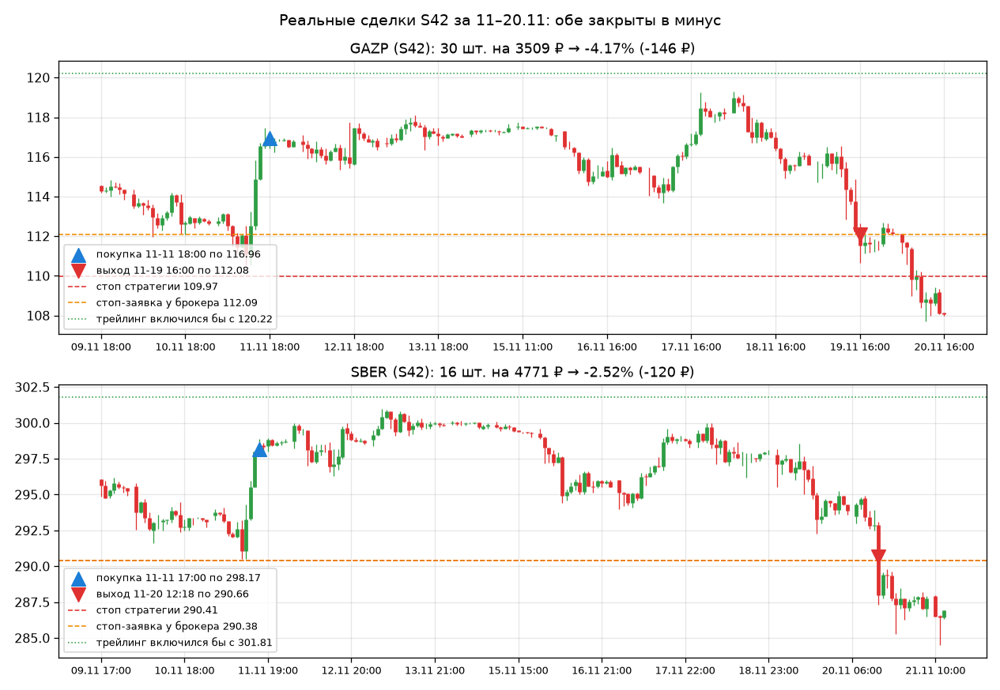
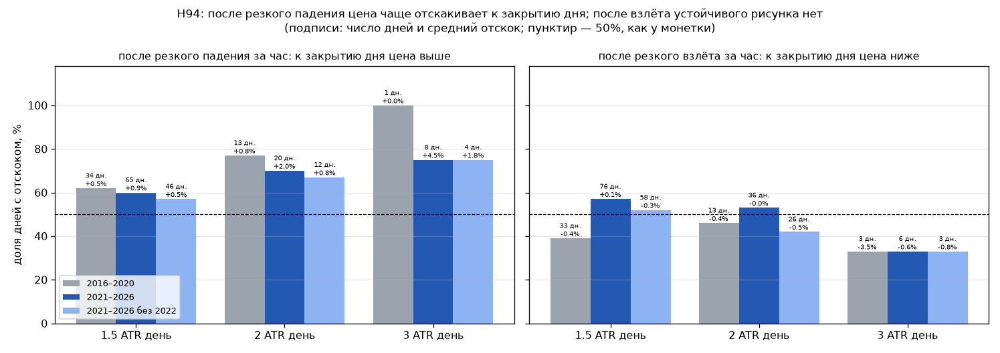
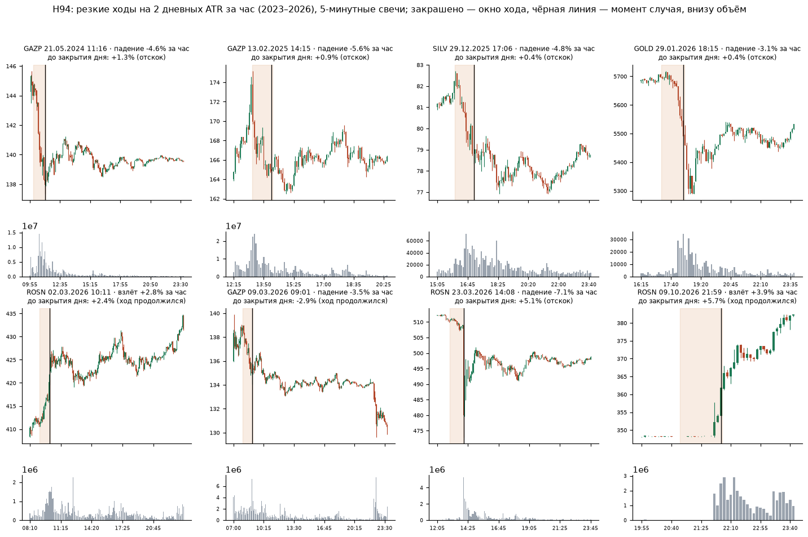
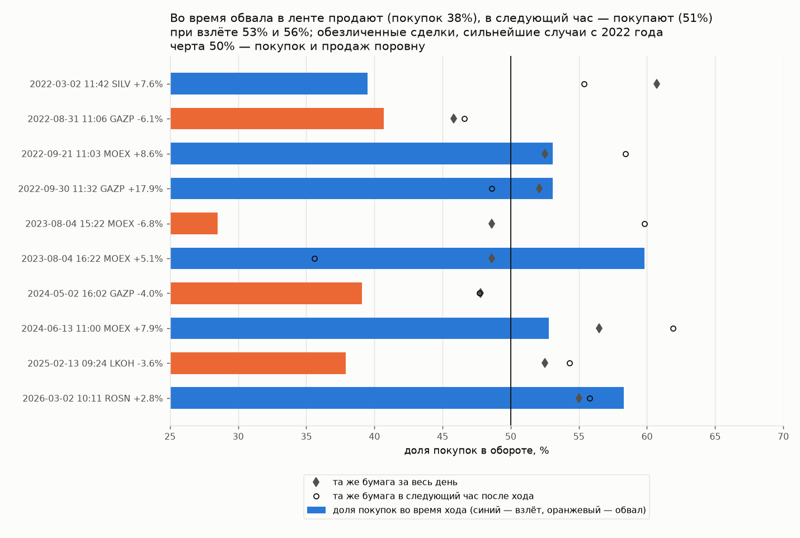
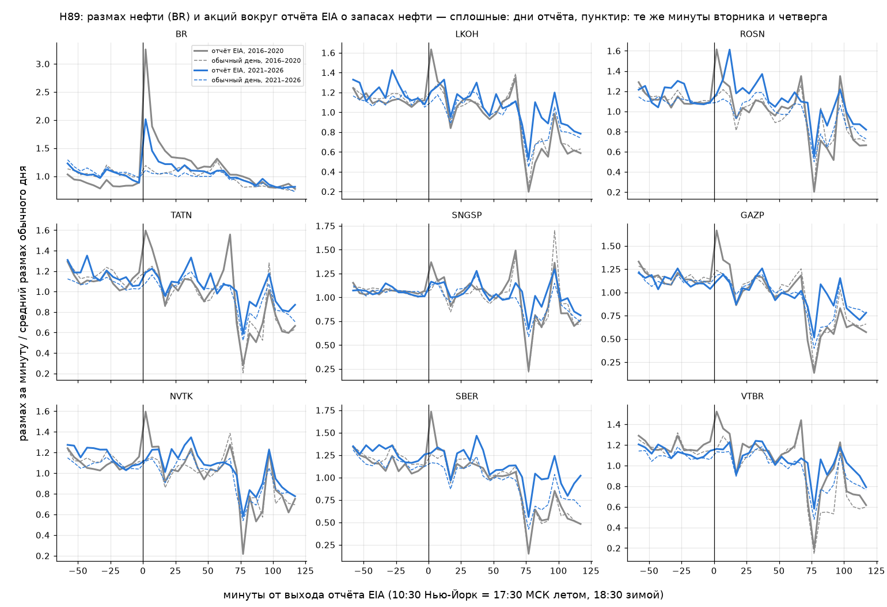
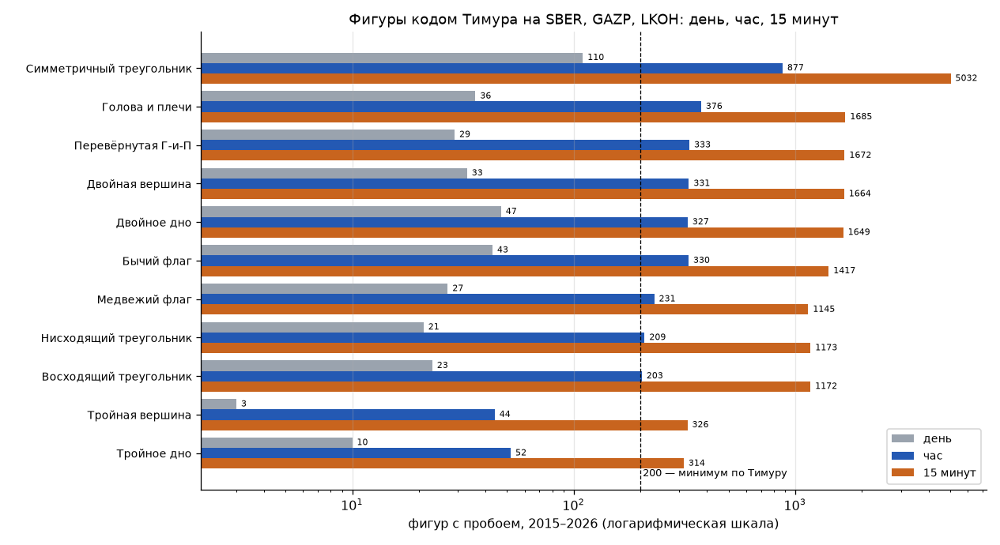

| день | что сделано |
|---|---|
| 17.11 | Созвон: план на неделю. Два чата в коде. H40 — все сделки 2025–2026 и 38 случаев под уровнем крупно. Ликбез «биржа и проект простыми словами». |
| 18.11 | Раздел банка «Рыночные неэффективности», план H94. Нефть Brent с ISS (все 209 контрактов). H89 по самой нефти — нет. Ревизия модели. Подключён исследовательский чат. |
| 19.11 | Тимур подтвердил план H94. GAZP на счёте закрыт стопом у брокера. |
| 20.11 | H94 посчитана → H96 «покупка после обвала». /ask в исследовательском чате с отправкой файлов и архивов. H91/H92 удалены. План H95. SBER закрыт по стопу. Архивы H40 и H94 в чате. |
| 21.11 | Сверка остановила S42 (5 сделок, −3.19% против +0.40%). H78: набор для выгрузки Telegram-канала (скрипт, инструкция, вариант для Windows). H94: лента сделок на 10 сильнейших случаях, страница со случаями для Тимура. |
| 23.11 | Созвон: новостные движения, фигуры на младших таймфреймах, возврат к фильтру. Фигуры кодом Тимура на часе и 15 минутах. H97 — новостные и неновостные движения. Освобождено место на сервере. |

В бэктесте на проверке 2021–2026 обе в плюсе: S46 — PF 1.70, прибыльных 33% сделок; S48 — PF 1.11, прибыльных 31%. Месяц на бумаге — мало для вывода о стратегии, но 16 убытков подряд при 31% прибыльных случаются с вероятностью около 0.3% — S48 сейчас работает не так, как в бэктесте. Сверка не берёт сигналы S42 и S48 на счёт; на бумаге они продолжают считаться — это видно в журнале.



Случаев мало (6 взлётов, 4 обвала) — это описание, не статистика. Ленту на всех случаях — вместе с H96.


Тимур: «на дневках по треугольнику ~50 примеров — это ни о чём, нужно 200–1000; фигуры — фрактал».
tg_export.py, инструкция и вариант для Windows «двойным щелчком» (сам ставит Python). Пробный запуск — 50 последних постов без медиа.Содержимое платного канала не публикуем и в отчёты не выносим.
| гипотеза | что | главный вопрос |
|---|---|---|
| H96 | покупка после обвала (из H94) | только лонг? выход до закрытия дня или держать? |
| H97 | новостные и неновостные движения | какие каналы, кто выгрузит |
| H95 | фигуры как сигнал входа | какой выход; ждать ли разметку Тагира; теперь — и на каком таймфрейме |
| H78 | следовать за авторами сигналов | ждёт выгрузку канала |
| H93 | таблица уровней трейдера | кто и как выгружает её каждый день |
| H87 | «ширина импульса» для S42 | фильтр входа или больше позиций |
| H64 | нейросеть вместо CatBoost | уже посчитана как L12 — закрыть или «нейросеть для волатильности»? |
| H39 | обучение на размеченных фигурах | какие фигуры; объединить с H95? |
| что | где |
|---|---|
| H94 — отчёт, таблицы, случаи | docs/results/h94.md, docs/results/h94/, журнал #H94, архив H94.zip в чате |
| H89 — нефть сама | docs/results/h89_oil.md, журнал #H89; ряд Brent — data/raw/moex/BR_1m_cont.csv |
| H40 — картинки случаев | docs/results/h40_trades.md, журнал #H40, архив H40.zip в чате |
| Ревизия модели | docs/results/model_review.md |
| Фигуры по таймфреймам | docs/results/h95/counts_by_tf.csv |
| /ask и архивы в чат | scripts/research_ask.py, scripts/hyp_post.py |
| Выгрузка Telegram | scripts/tg_export.py, docs/tg_export_timur.md |
| Созвоны | docs/meetings/2026-11-17_timur.md, 2026-11-23_timur.md |